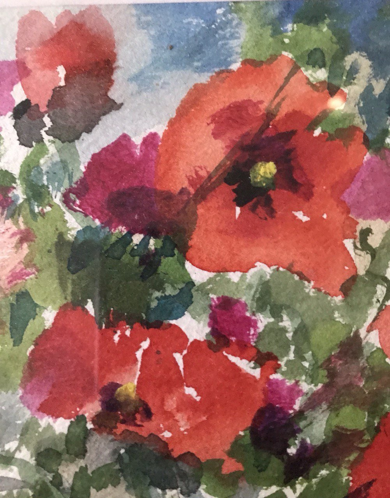
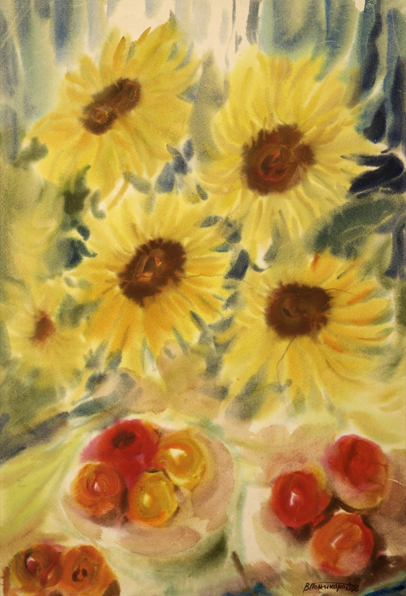
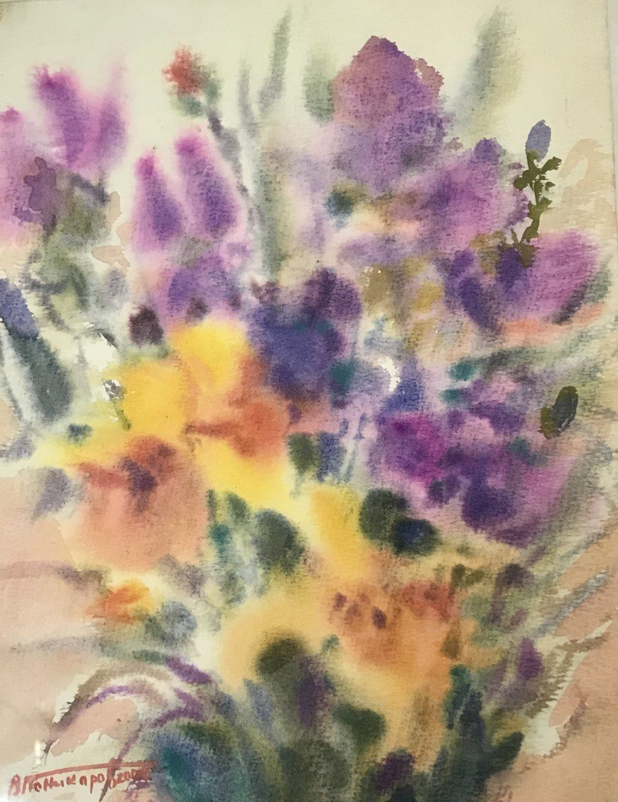
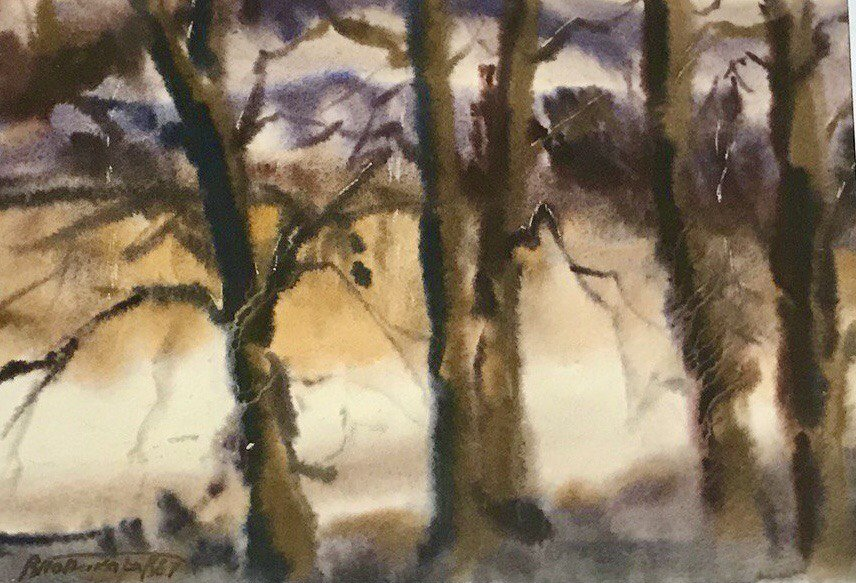
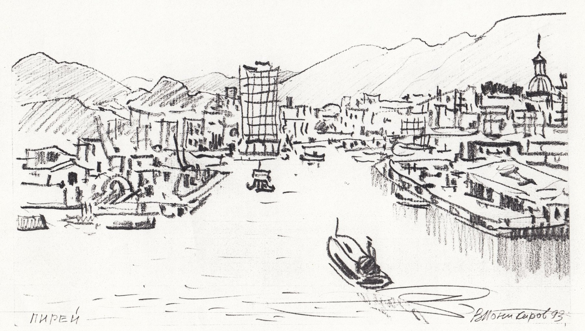

PoppiesFlowers

The Master of Wet-on-Wet
For more than half a century he painted water with water: the Black Sea, the Crimean shore, the flowers of Odesa. Pure wet-on-wet watercolor, in a single sitting and with no white paint.
Vasyl Ponikarov devoted his life to watercolor, the least forgiving of all media. His works are held by museums and private collectors across Europe, Israel and the United States; the studio archive is kept by his family.
“The king of flowers and the emperor of sunflowers.”M. Sherif, art historian, Alexandria
Selected Works
A selection from the family archive. Every work is catalogued with its year, dimensions and condition; titles and dates are being confirmed against the studio catalogue.








 Vasyl Andriyovych Ponikarov at work in his Odesa studio
Vasyl Andriyovych Ponikarov at work in his Odesa studio
The Artist
Born on 26 August 1929, Vasyl Andriyovych Ponikarov grew up with color: his mother, Yevdokia, painted the stoves and walls of village houses.
He trained at the Grekov Odesa Art School and the Moscow Polygraphic Institute, and joined the Union of Artists of the USSR in 1971. It was a teacher in Odesa who set his course for life:
“You must paint in watercolor. I think it is yours.”Leonid Muchnik, his teacher in Odesa
Grand Prix in Paris in 1999 at an exhibition of private watercolor collections. Honored Artist of Ukraine. He died on 16 May 2014. In 2017 his family gave one of his poppy paintings to the International Watercolor Museum in Fabriano, Italy.
The live article from Wikipedia, shown as it appears there.
Voyages
From 1980 he sailed as staff artist aboard the ocean liner Fyodor Chaliapin. His travels brought sketches and whole series of harbors and cities.
Piraeus · Rome · Barcelona · Istanbul · Cairo · Paris · London


The Studio Archive
Landscapes, the sea and the coast, still lifes and flowers, each one numbered, measured and described. The family is preparing the archive for future exhibitions and a catalogue.
In the Collections of
and private collections in France, Belgium, Germany, Italy, Israel, Norway, Latvia and the United States
Contact
For exhibitions, museum loans, research and permissions, please write to the artist's family.
Write to the familyfamily@ponikarov.com